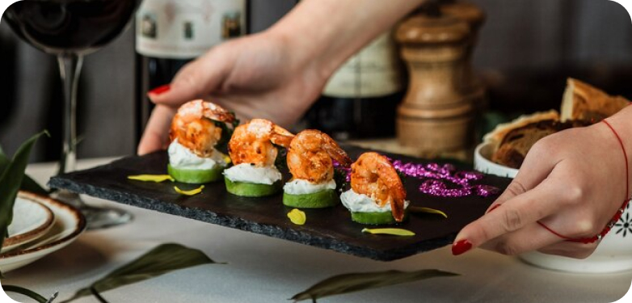
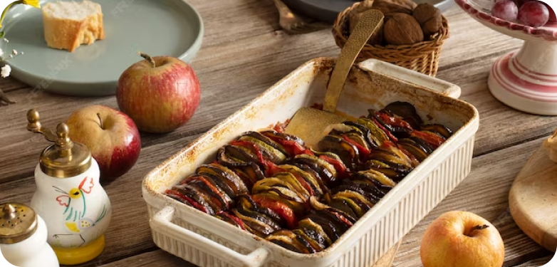
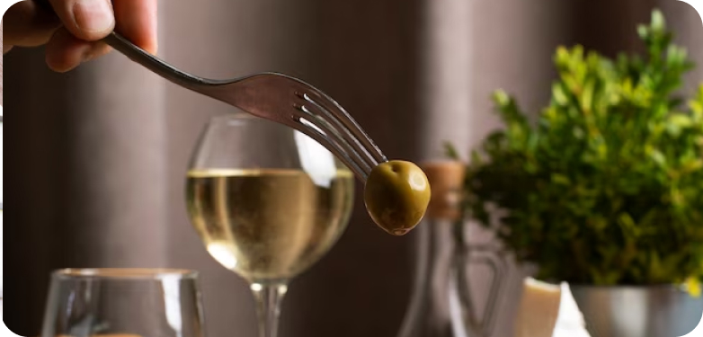
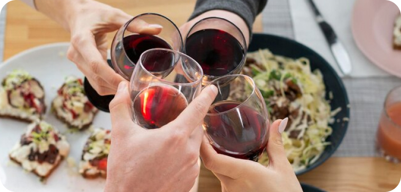

Our Blog
Unlock the secrets to creating memorable dining experiences with expertly paired food and wine combinations. From classic pairings to innovative matches, this guide will empower you to elevate your dinner party to new heights of culinary sophistication.
1. Understanding Flavor Profiles: Delve into the fundamentals of flavor profiles, learning how to identify key characteristics such as acidity, sweetness, bitterness, and richness in both food and wine to create harmonious pairings that complement and enhance each other.
2. Matching Intensity: Explore the concept of matching intensity, balancing the weight and strength of both the dish and the wine to ensure that neither overpowers the other, resulting in a seamless and balanced pairing that allows each element to shine..
3. Considering Texture: Consider the texture of both the food and the wine, aiming to pair contrasting textures for added interest and complexity, such as crisp wines with creamy dishes or silky wines with hearty, textured fare.
4. Pairing by Region: Explore traditional food and wine pairings from renowned culinary regions around the world, discovering the time-honored combinations that have stood the test of time and exploring the unique terroir-driven flavors that define each region.
5. Experimenting with Contrasts: Embrace the art of contrasting pairings, experimenting with unexpected flavor combinations that challenge conventional wisdom and stimulate the palate, such as pairing spicy dishes with off-dry or sweet wines to create a delightful contrast of flavors.
6. Adapting to Dietary Preferences: Cater to dietary preferences and restrictions by offering a diverse selection of food and wine pairings that accommodate various dietary lifestyles, including vegetarian, vegan, gluten-free, and dairy-free options, ensuring that all guests can indulge in the culinary experience.
7. Considering Seasonal Ingredients: Embrace seasonal ingredients and flavors, selecting wines that complement the seasonal bounty of fresh produce and incorporating seasonal herbs, spices, and aromatics into your dishes to create vibrant and dynamic pairings that celebrate the essence of each season.
8. Seeking Balance: Strive for balance in your pairings, aiming to create a synergy between the flavors, textures, and aromas of the food and wine to achieve a harmonious and cohesive dining experience that leaves a lasting impression on your guests.
9. Personalizing the Experience: Personalize the dining experience by considering the preferences and tastes of your guests, tailoring your pairings to their individual palates and offering a variety of options to accommodate diverse preferences and tastes.
10. Exploring New Horizons: Step out of your comfort zone and explore new horizons in food and wine pairing, embracing creativity and innovation to discover unexpected and memorable combinations that elevate your dinner party to a truly unforgettable culinary experience.
